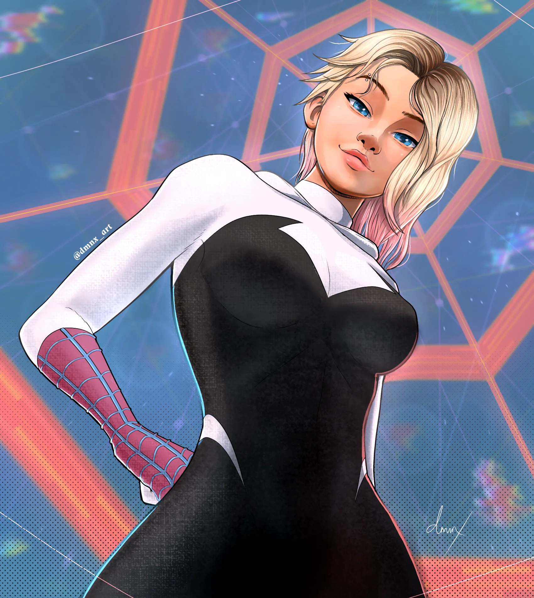

A Gwen Stacy, também conhecida como Spider-Gwen ou Ghost-Spider, é uma personagem muito importante na história do Miles Morales no universo do Homem-Aranha. Ela vem de outra realidade, onde foi picada pela aranha radioativa no lugar de Peter Parker e se tornou a heroína de sua cidade. No filme Homem-Aranha: No Aranhaverso (e suas continuações), Gwen e Miles desenvolvem uma amizade profunda, marcada por confiança, apoio e também por uma química especial que sugere algo além da amizade. Gwen é determinada, habilidosa e carrega um ar de independência, mas também enfrenta dilemas pessoais — principalmente a responsabilidade de ser uma heroína em seu próprio mundo. A relação dela com Miles mostra o quanto os dois crescem juntos, equilibrando suas vidas de adolescentes com o peso de serem heróis.

Clique para voltar